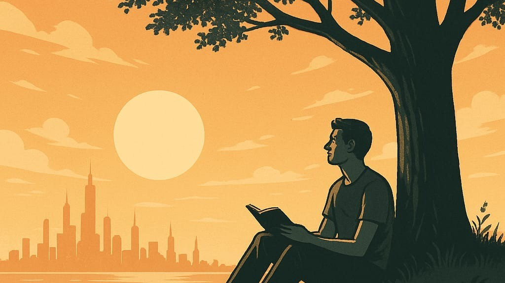

Renda Básica Universal - Liberdade Ócio E O Futuro Humano

Contemplação
Renda Básica Universal: Liberdade, Ócio e o Futuro Humano
E se ninguém mais precisasse trabalhar para sobreviver? O que faríamos com essa liberdade?
A proposta da Renda Básica Universal (RBU) --- um pagamento garantido, regular e incondicional para todas as pessoas --- tem ganhado força em debates sobre o futuro do trabalho, da economia e da dignidade humana. Muitos a veem como uma resposta possível à automação e à desigualdade; outros a temem como uma ameaça à produtividade e à moral social.
Mas será que a RBU pode realmente funcionar dentro do capitalismo moderno? E mais: o que aconteceria com o ser humano quando liberto da obrigação do trabalho?
Liberdade dentro do sistema
Diferente do que muitos imaginam, a RBU não é uma proposta anticapitalista. Ela não elimina o mercado livre, nem a propriedade privada ou o empreendedorismo. Ao contrário, ela pode ser um mecanismo de redistribuição simples e eficiente, que garante segurança básica sem destruir os incentivos da economia.
Programas piloto em países como Finlândia, Canadá e Quênia mostram que a RBU pode aumentar o bem-estar, reduzir o estresse, e não leva ao abandono em massa do trabalho. Muitos continuam trabalhando, mas com mais autonomia e dignidade.
O ócio é o vilão?
Há quem tema que, sem a necessidade de trabalhar, as pessoas cairiam no ócio, nas drogas ou em uma existência vazia. Mas essa visão parte de uma leitura reducionista do ser humano --- como se só fôssemos produtivos sob ameaça da fome.
Filosoficamente, o ócio sempre teve duas faces. Para os gregos, era o tempo sagrado do pensar, do criar, do contemplar. Para a sociedade moderna, tornou-se sinônimo de preguiça. A verdade é que o ócio pode ser o berço da criatividade ou o abrigo do tédio, dependendo de como é cultivado.
A pergunta não é se as pessoas parariam de trabalhar --- mas sim o que fariam se tivessem a liberdade de escolher. E aí mora a beleza (e o desafio) da RBU: ela nos força a repensar o propósito do trabalho, o valor do tempo livre e a essência da vida em sociedade.
Para onde vamos?
Uma sociedade com RBU precisará mais do que dinheiro: precisará de cultura, educação, saúde mental, espaços criativos e sentido. Se criarmos esse ecossistema, veremos menos vício e mais arte; menos desespero e mais inovação; menos medo e mais humanidade.
A renda básica não é só uma proposta econômica. É uma proposta de futuro possível, onde a dignidade não dependa da sorte ou do suor, mas da nossa própria condição de existência.
Talvez, com uma base segura, possamos finalmente parar de sobreviver --- e começar a viver.